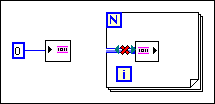

The channel terminal of a channel wire endpoint on the block diagram is not wired. In the following example, the channel output of the writer endpoint is not wired.

To correct this error, you must wire all channel outputs of channel writer endpoints through structures and subVIs to channel inputs of channel reader endpoints.